<!DOCTYPE html>
<html>
<head>
<meta charset="UTF-8">
<title> HomeTown </title>
</head>
</html>
<body>
<center>
<header>
<h1>Welcome To My Web Page</h1>
</header>
<hr>
<nav>
<a href="index.html">Home</a> |
  <a href="AboutMe.html">About Me</a> |
  <a href="MyPhotos.html">My Photos</a> | 
  <a href="Hobbies.html">Hobbies</a> |
  <a href="HomeTown.html">HomeTown</a> | 
  <a href="SocialMedias.html">Social Medias</a> | 
  <a href="ContactMe.html">Contact Me</a> |
  <a href="RegistrationForm.html">Registration Form</a> |
</nav>
<hr>
	 <h3> My hometown </h3> <h1>ANTAKYA/HATAY </h1> <br>
	<p>
		Antakya (Arabic: انطاكية, Anṭākye, Greek: Ἀντιόχεια, Antiohia) is the largest population of the province of Hatay in terms of population and is the center of the province of Hatay before the metropolis. With the new arrangement, it was separated as Antakya and Bay of Fame. Asi River flows through the middle.
The administrative center of Hatay, one of the border provinces of the Republic of Turkey in the south of Anatolia, is the center of the settlement in the south of Antakya, 36 10 'north latitude and 36 06' eastern longitude.
	</p>
	
	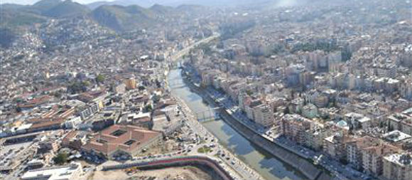 <br>
		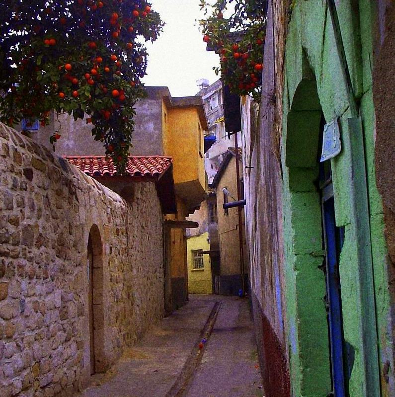 <br>
			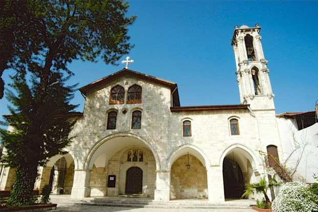  <br>
			<h2> And also we are the best about food.. </h2>
<p>
	Most of Hatay Cuisine is not only in terms of food, but also in a region that extends from Aleppo to Central Anatolia. Particularly the fodder and bread types produced by similar methods constitute the common aspects of the region's illusions. But this similarity is a certain extent. Because when Hatay Cuisine is considered in general, it is seen that Hatay Foods are largely different from the food of the regions mentioned in terms of material, method and taste. In fact, it is not possible to find food items that are products of Hatay Cuisine and neighboring foods that are made with them. In addition, cold appetizers and desserts are so numerous and unprecedented in taste that they are not comparable in number to other ingredients. Kebabs, cookies and juicy meals are important places in Hatay Cuisine, the taste of food is spicy, bitter and sour. However, the spice and bitterness used does not exceed the appetite rate, it never reaches a measure that will harm the body.

</p>
			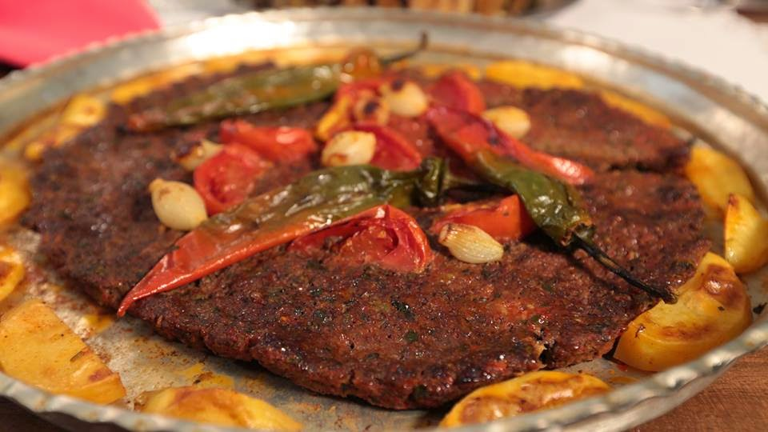 
			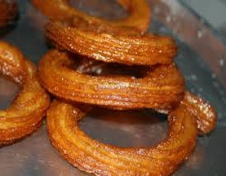 
			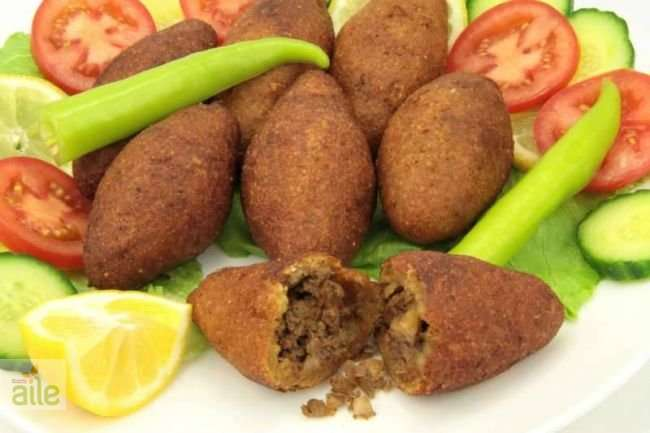 
			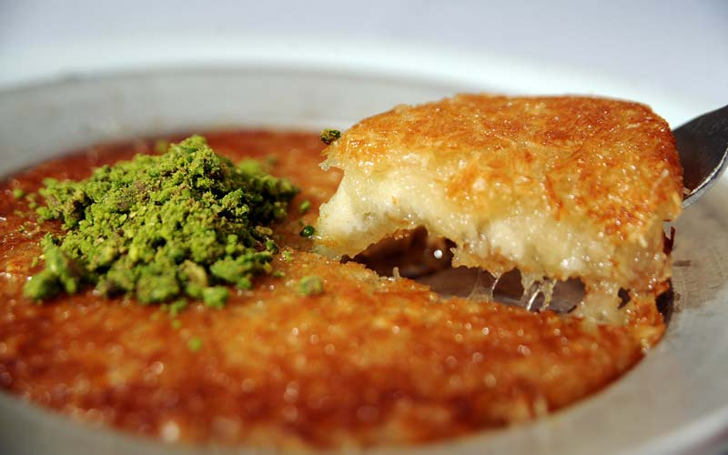 
			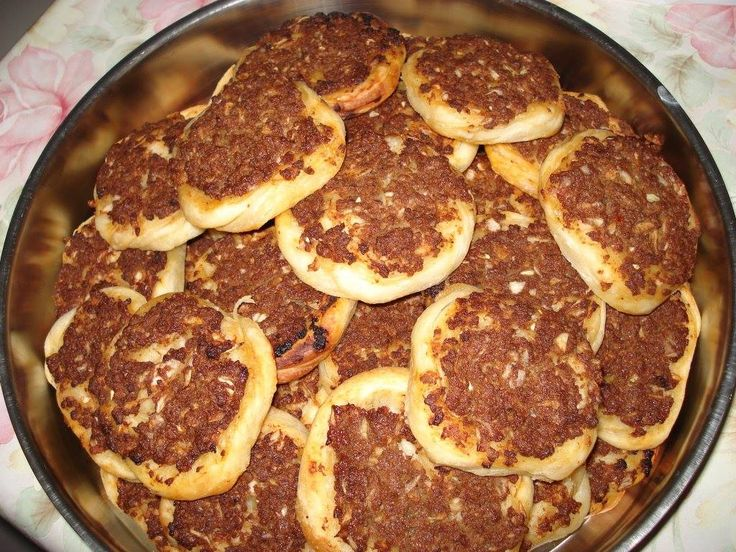 
			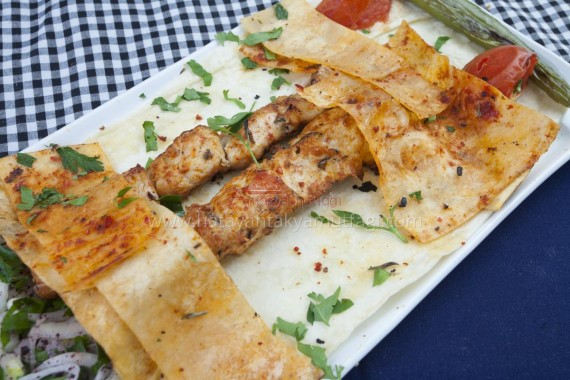 
<h2> Places to visit</h2>
BESIKLI CAVE <br>
<td><figure>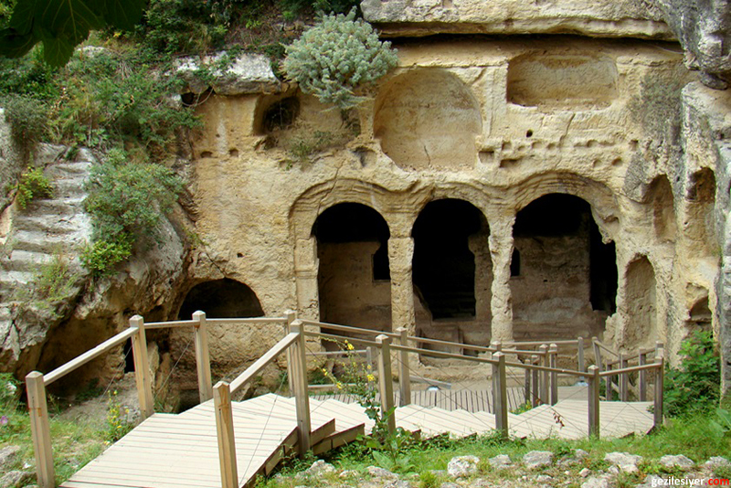<figcaption>  <br>  </figcaption></figure></td>
<br>
<br>
SAMANDAG BEACH <br>
<td><figure>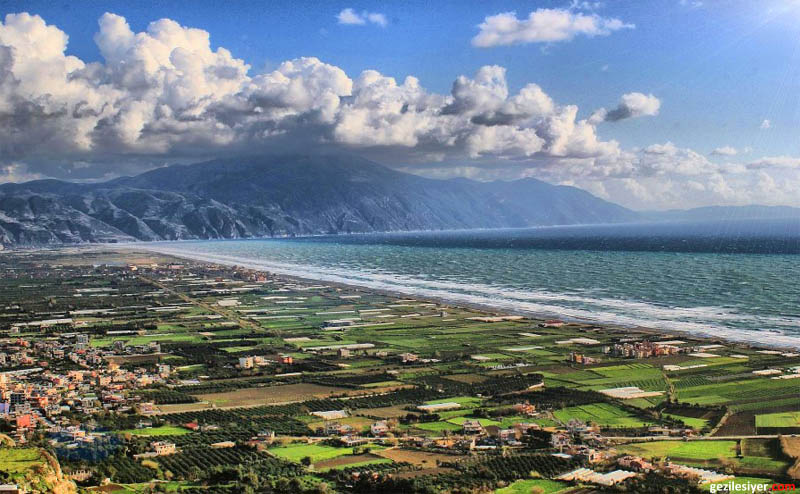<figcaption>  <br>  </figcaption></figure></td>
<br>
<br>
HARBIYE WATERFALLS<br>
<td><figure>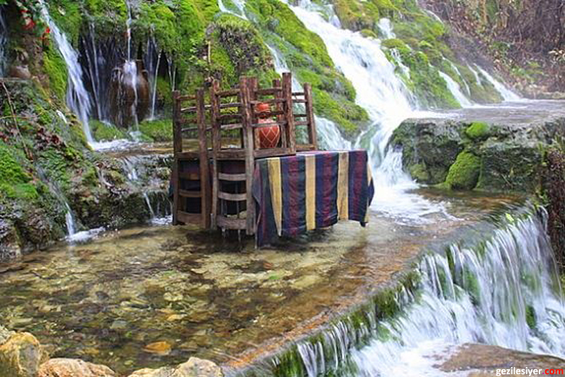<figcaption>  <br>  </figcaption></figure></td>
<br>
<br>
St. SIMON MONASTERY<br>
<td><figure>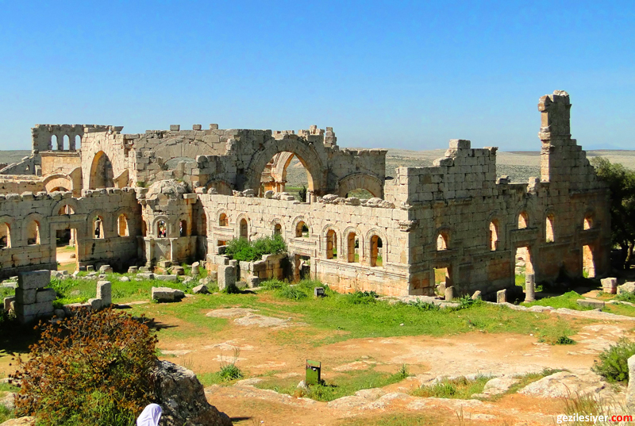<figcaption>  <br>  </figcaption></figure></td>
<br>
<br>
TITUS TUNNEL<br>
<td><figure>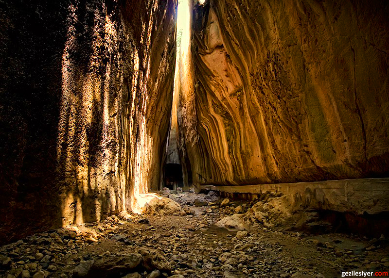<figcaption>  <br>  </figcaption></figure></td>
<br>
<br>


 </body>
